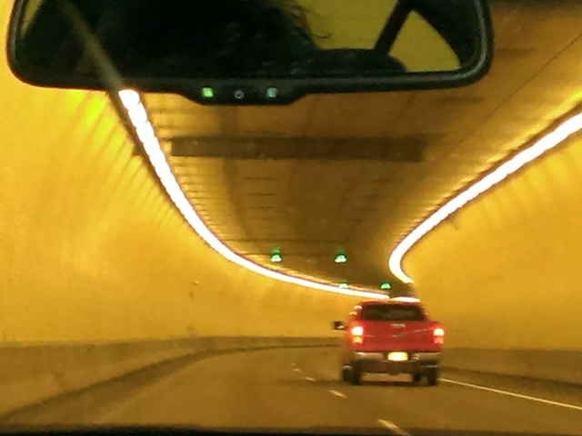
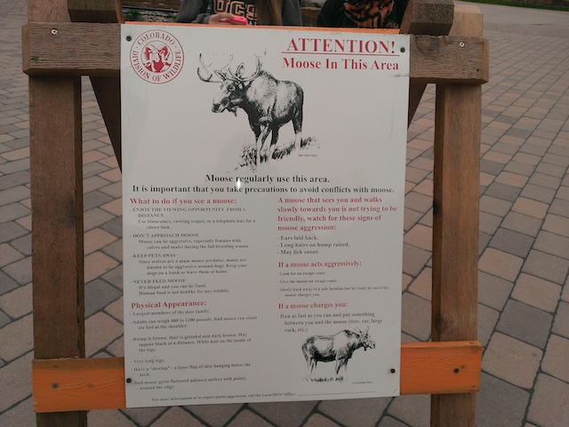
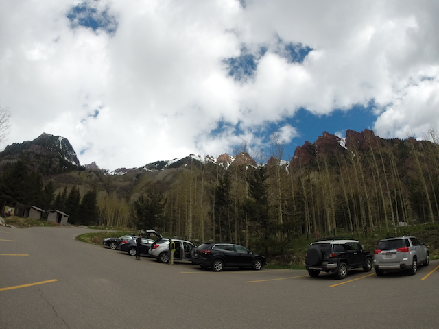
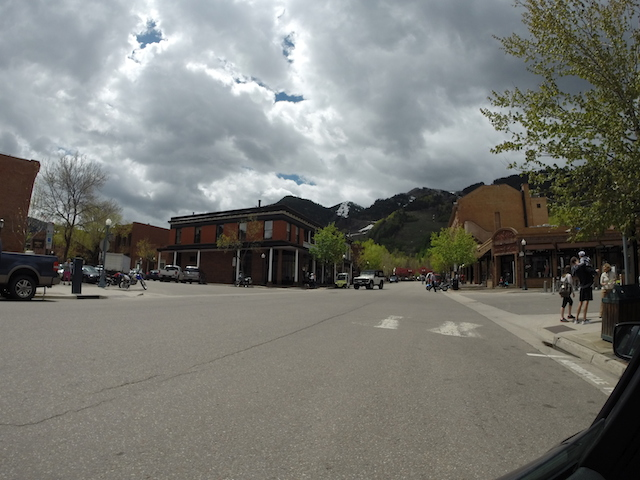
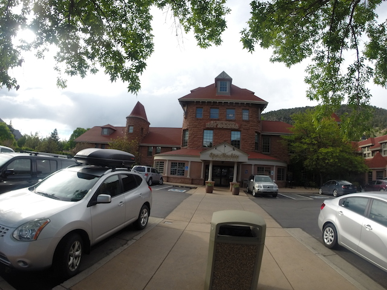
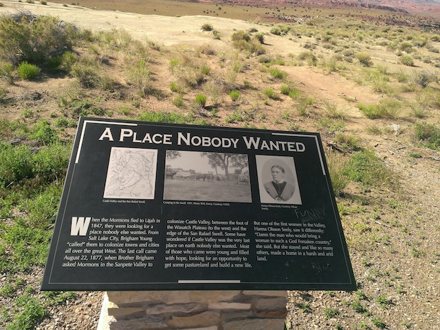

| |
Utah/Colorado Road Trip
Lagoon Colorado
Well, Lagoon was fun and all, but it is time for us to move on. Don't worry. We'll be back real soon. But right now. It's time for us to get up early on head on over to Colorado.
Windmills. They're both beautiful and healthy for the planet, and anyobody who complains of eye pollution from them should be bitch-slapped.
What is it about the Western United States that just makes this part of the world so nice?
Looking out over the 70 freeway. Hope we don't run into any taxadermied owls this trip. =)
YAY! WE MADE IT TO COLORADO!
The moment you enter the state and it all just suddenly becomes so green. I love it.
 All right. First thing we do in Colorado, hit up the theme park.
All right. First thing we do in Colorado, hit up the theme park.
Hey, I really liked the park on the Texas/Rocky Mtn Road Trip, and was more than happy to stop on by here again.
"DO NOT LISTEN TO THE SIGN! THE SIGN FEEDS YOU LIES!"
"Good lies or Bad lies?"
"BOTH!!!"
 All right. Time to head up the cable car to the top of the mountain.
All right. Time to head up the cable car to the top of the mountain.
Better hope that the cable doesn't snap. It's a long way down.
Enjoying the view? >=)
"You know that that sign exists because some asshole literally used the urinal as an ash tray. Now if you excuse me, I have to go find this asshole and kick him in the crotch."
YAY! TIME TO GO CRAZY ON THE ALPINE COASTER!
OK. This annoys me for two reasons. #1. The Alpine Coaster is NOT a credit. IT DOESN'T COUNT!!! #2. I think the Alpine Coaster is great and all. I love riding it. But it is NOT Top 10 Material. Sorry.
Yeah. This ride is awesome.
 Ooh. Happy to hear that there are bats in the Cave Tours, which are totally awesome and you should do BTW.
Ooh. Happy to hear that there are bats in the Cave Tours, which are totally awesome and you should do BTW.
 Hey remember the lies? Well, let's first get to the good lie. The Screamin Swing over the canyon was open. And we got to ride it in the rain. HOLY SH*T!!! BEST RIDE EVER!!! I'm dead serious. That Screamin Swing ride, if it was always like that, would be Top 10 Flat Ride Worthy. AMAZING!!!
(Photo by Cody Kempema)
Hey remember the lies? Well, let's first get to the good lie. The Screamin Swing over the canyon was open. And we got to ride it in the rain. HOLY SH*T!!! BEST RIDE EVER!!! I'm dead serious. That Screamin Swing ride, if it was always like that, would be Top 10 Flat Ride Worthy. AMAZING!!!
(Photo by Cody Kempema)
The bad lie. You know how I still had a credit to get here? Well, it was closed AGAIN thanks to said rain that made the Screamin Swing so good. And I'm not sure because that ride is so damn unreliable, but it might've been open earlier in the day. If it had just been closed, posted on the sign and all, I would've been pissed, but at least I would've shrugged it off as "Unlucky Coincidence." But with this, all I could think was "F*CK YOU!!!". I was pissed. I was REALLY pissed. The only good news is that considering how I'm going to be taking MANY more trips to Colorado in the near future, I'm going to be back here soon and when I come back on my 3rd visit (provided it's not closed for other reasons), I'm beelining to that credit immidietly, regardless of what anybody else thinks or wants to do.
I'm not sure why our campsite got bad Yelp reviews. I thought it was great. Apparently they were complaining that the nearby freeway was too loud? Really? Seriously, quit bitching.
 The only complaint I'd have is that there is something seriously wrong with the water here. I know it's shocking considering Colorado, nature, beauty, and the U.S.A having some of the best tap water in the world, but this stuff was AWFUL!!! Seriously tasted like plastic. I think there may be some plastic bottle company polluting the water.
The only complaint I'd have is that there is something seriously wrong with the water here. I know it's shocking considering Colorado, nature, beauty, and the U.S.A having some of the best tap water in the world, but this stuff was AWFUL!!! Seriously tasted like plastic. I think there may be some plastic bottle company polluting the water.

TAKE THE TUNNEL!!!
We just had to stop on by Veil again. It was empty and closed last time, and I still really enjoyed it. So let's come and show all the new people.

Warning. Apparently moose just roam this shopping center for some reason? =/
Hey, this time, there was actually stuff open that wasn't just Starbucks. And this pub had some really good food.
Random stop in the middle of nowhere to take pictures. Have I mentioned that I love Colorado?
OK. I gotta introduce you guys to a product called Life Straw. This thing filters water so that dirty river water is clean and drinkable. No seriously, we tried it in Santa Paula with some dirty chocolate milk water. Tasted exactly like Tap Water. So yeah. We brought it and have been drinking from rivers and other stuff. I'm dead serious. Buy this product now.
Hmm. You can see the Iron Oxide in the mountains. Very reminiscent of Tar Creek.
Hooray! We made it to Maroon Bells! =)

All right. Less standing around. More hiking.
Damn! Maroon Bells is freaking beautiful! =)
You know what? We're feeling stupid today. Let's climb to the top of that hill!
Probably not a good idea to be wearing my Vibrams in the snow.
OK. This hike was AWFUL!! Not so much the actual climb, but just the sheer fact that I was climbing on unstable rocks! It was a rock slide with every step I took. And I really do not like having to be cautious about rocks landing on my feet.
Well, we only made it halfway before realizing that we needed to turn around so we can leave at a sane time. But hey. The view from halfway up is pretty incredible.

Hey. I can't think of a better way to celebrate not being crushed in a rockslide than by lunch in Aspen (really nice town).
I just love the way that Colorado looks like a cross between Norway and Tar Creek. It's definetly one of my favorite states.
 Well, considering that we're in the hiking mood and just completed Maroon Bells, how about we hike Hanging Lake again.
Well, considering that we're in the hiking mood and just completed Maroon Bells, how about we hike Hanging Lake again.
It was a great hike back in 2013, and it was great again this year.
Always enjoy that waterfall just above Hanging Lake.
Not sure if this is a new rule or if we just ignored it last time, cause I can certainly tell you that people were ignoring it this time.
Hanging Lake in the rain. Hey, at least it f*cking rains here! Please send some over to California cause WE NEED IT!!!!
"Hey there little Squirrel. Climb onto my arm. Just don't bite me please."
 Aww. The poor little fellas has developed a taste for human flesh.
Aww. The poor little fellas has developed a taste for human flesh.

And considering how this is by far, the best pool ever, we just HAD to stop here.
Yes, they really have to warn you to not swim while under the influence of alcohol or marijuana. Oh wait, they have to warn about that since it's legal here! And look at Colorado society! Falling apart before our very eyes! I've said it before and I'll say it again, but the War on Drugs PISSES me off. I may not be a stoner, having only smoked a couple times and finding it to be kind of overrated honestly, but the criminalization of weed INFURIATES me!! I know I voted for Prop 19 (which failed) in 2010, and I keep hearing that it's going to be on the California Ballot in 2016. IT F*CKING BETTER!! ENOUGH OF THIS BULLSH*T PUTTING PEOPLE IN PRISON FOR NON-VIOLENT OFFENSES, ESPECIALLY FOR SOMETHING LESS HARMFUL THAN TOBACCO AND ALCOHOL!!! Hey, it failed the first time in Oregon and passed the second time, so I have hope in California.

Clearly, these people did not make it out to Nevada.
Sadly, the time has come for us to leave Colorado and head back home. But first, a quick stop in Cody's favorite place in the world. Las Vegas. =)
Unfortunetly, we couldn't hang out with John due to his work schedule (DAMN!!), but we still had fun at the Adventuredome.
 Yeah. You know why we stopped. =)
Yeah. You know why we stopped. =)
 I love El Loco. Easily the best coaster in Nevada.
I love El Loco. Easily the best coaster in Nevada.
 And of course, we might as well stop and ride Desperado, which is still a really good ride. This trip was a blast. Colorado is great as always, we saw a lot of cool stuff in nature, and Lagoon keeps proving itself to be one of my favorite parks, and I can't wait to come back for Cannibal later this year.
And of course, we might as well stop and ride Desperado, which is still a really good ride. This trip was a blast. Colorado is great as always, we saw a lot of cool stuff in nature, and Lagoon keeps proving itself to be one of my favorite parks, and I can't wait to come back for Cannibal later this year.
Home
|